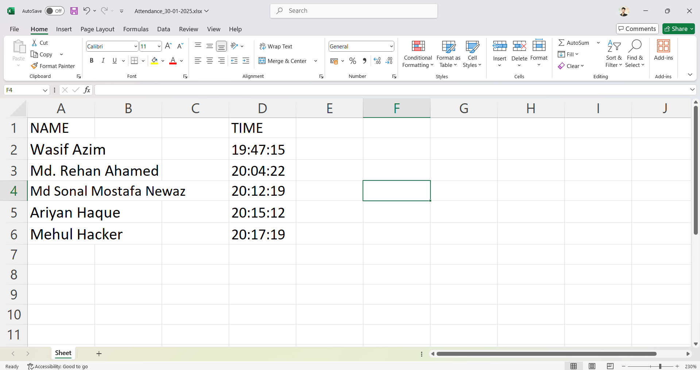

Introduction
The Smart Attendance Tracker is an advanced system that automates the process of tracking attendance using facial recognition technology. This system is designed to enhance the efficiency and accuracy of attendance management in educational institutions, workplaces, and other organizations.
Working Principle
The Smart Attendance Tracker operates using a combination of computer vision and machine learning techniques to recognize and verify faces. The system captures images of individuals, processes the images to extract facial features, and matches the features against a pre-registered database to mark attendance. The key components and steps involved are:
- Image Capture: The system uses a camera to capture images of individuals as they enter the premises. The camera is strategically placed to ensure clear and unobstructed views of faces.
- Face Detection: The captured images are processed using computer vision algorithms to detect faces. The system identifies the location of faces in the images and extracts the relevant facial features.
- Feature Extraction: The system uses machine learning models to extract unique facial features from the detected faces. These features are used to create a digital representation of each face.
- Face Recognition: The extracted features are compared against a pre-registered database of faces to identify individuals. The system uses advanced matching algorithms to ensure high accuracy and reliability.
- Attendance Marking: Once a face is recognized, the system marks the attendance of the individual in a digital attendance register. The attendance data is stored securely and can be accessed for reporting and analysis.

The system operates as follows:
- The camera captures images of individuals as they enter the premises.
- The system processes the images to detect faces and extract facial features.
- The extracted features are compared against a pre-registered database to identify individuals.
- Once a face is recognized, the system marks the attendance of the individual in a digital attendance register.
- The attendance data is stored securely and can be accessed for reporting and analysis.
Code for Face Registration
# filepath: /c:/Users/Md.zamal/OneDrive/Desktop/face_recognition_project-main/add_faces.py
import cv2
import pickle
import numpy as np
import os
video = cv2.VideoCapture(0)
facedetect = cv2.CascadeClassifier('data/haarcascade_frontalface_default.xml')
faces_data = []
i = 0
name = input("Enter Your Name: ")
while True:
ret, frame = video.read()
gray = cv2.cvtColor(frame, cv2.COLOR_BGR2GRAY)
faces = facedetect.detectMultiScale(gray, 1.3, 5)
for (x, y, w, h) in faces:
crop_img = frame[y:y+h, x:x+w, :]
resized_img = cv2.resize(crop_img, (50, 50))
if len(faces_data) <= 100 and i % 10 == 0:
faces_data.append(resized_img)
i += 1
cv2.putText(frame, str(len(faces_data)), (50, 50), cv2.FONT_HERSHEY_COMPLEX, 1, (50, 50, 255), 1)
cv2.rectangle(frame, (x, y), (x+w, y+h), (50, 50, 255), 1)
cv2.imshow("Frame", frame)
k = cv2.waitKey(1)
if k == ord('q') or len(faces_data) == 100:
break
video.release()
cv2.destroyAllWindows()
faces_data = np.asarray(faces_data)
faces_data = faces_data.reshape(100, -1)
# Paths to the data files
names_path = 'C:/Users/Md.zamal/OneDrive/Desktop/face_recognition_project-main/data/names.pkl'
faces_path = 'C:/Users/Md.zamal/OneDrive/Desktop/face_recognition_project-main/data/faces.pkl'
# Clear existing data before adding new entries
if os.path.isfile(names_path):
os.remove(names_path)
if os.path.isfile(faces_path):
os.remove(faces_path)
names = [name] * 100
with open(names_path, 'wb') as f:
pickle.dump(names, f)
with open(faces_path, 'wb') as f:
pickle.dump(faces_data, f)
Code for Face Recognition and Attendance Marking
# filepath: /c:/Users/Md.zamal/OneDrive/Desktop/face_recognition_project-main/test.py
from sklearn.neighbors import KNeighborsClassifier
import cv2
import pickle
import numpy as np
import os
import csv
import time
from datetime import datetime
from win32com.client import Dispatch
import openpyxl
from openpyxl.styles import Font
def speak(str1):
speak = Dispatch("SAPI.SpVoice")
speak.Speak(str1)
video = cv2.VideoCapture(0)
facedetect = cv2.CascadeClassifier('data/haarcascade_frontalface_default.xml')
# Load the face data and labels using the correct path
with open('C:/Users/Md.zamal/OneDrive/Desktop/face_recognition_project-main/data/names.pkl', 'rb') as w:
LABELS = pickle.load(w)
with open('C:/Users/Md.zamal/OneDrive/Desktop/face_recognition_project-main/data/faces.pkl', 'rb') as f:
FACES = pickle.load(f)
# Check lengths of FACES and LABELS
print('Shape of Faces matrix --> ', FACES.shape)
print('Number of Labels --> ', len(LABELS))
if FACES.shape[0] != len(LABELS):
raise ValueError(f"Mismatch in number of samples: FACES({FACES.shape[0]}) and LABELS({len(LABELS)})")
knn = KNeighborsClassifier(n_neighbors=5)
knn.fit(FACES, LABELS)
imgBackground = cv2.imread("background.png")
COL_NAMES = ['NAME', 'TIME']
# Keep track of already marked students
marked_students = set()
# Excel file setup
excel_file = "Attendance/Attendance_" + datetime.now().strftime("%d-%m-%Y") + ".xlsx"
if not os.path.isfile(excel_file):
workbook = openpyxl.Workbook()
sheet = workbook.active
sheet.append(COL_NAMES)
workbook.save(excel_file)
while True:
ret, frame = video.read()
gray = cv2.cvtColor(frame, cv2.COLOR_BGR2GRAY)
faces = facedetect.detectMultiScale(gray, 1.3, 5)
for (x, y, w, h) in faces:
crop_img = frame[y:y+h, x:x+w, :]
resized_img = cv2.resize(crop_img, (50, 50)).flatten().reshape(1, -1)
output = knn.predict(resized_img)[0] // Get the label (name) of the predicted person
if output not in marked_students: // Check if the student has not been marked
ts = time.time()
date = datetime.fromtimestamp(ts).strftime("%d-%m-%Y")
timestamp = datetime.fromtimestamp(ts).strftime("%H:%M:%S") // Corrected time format
csv_file = "Attendance/Attendance_" + date + ".csv"
exist = os.path.isfile(csv_file)
cv2.rectangle(frame, (x, y), (x+w, y+h), (0, 0, 255), 1)
cv2.rectangle(frame, (x, y), (x+w, y+h), (50, 50, 255), 2)
cv2.rectangle(frame, (x, y-40), (x+w, y), (50, 50, 255), -1)
cv2.putText(frame, str(output), (x, y-15), cv2.FONT_HERSHEY_COMPLEX, 1, (255, 255, 255), 1)
cv2.rectangle(frame, (x, y), (x+w, y+h), (50, 50, 255), 1)
attendance = [str(output), str(timestamp)]
// Mark the student as present in CSV
if exist:
with open(csv_file, "+a") as csvfile:
writer = csv.writer(csvfile)
writer.writerow(attendance)
csvfile.close()
else:
with open(csv_file, "+a") as csvfile:
writer = csv.writer(csvfile)
writer.writerow(COL_NAMES)
writer.writerow(attendance)
csvfile.close()
// Mark the student as present in Excel
workbook = openpyxl.load_workbook(excel_file)
sheet = workbook.active
sheet.append(attendance)
// Adjust font size for names dynamically based on length
name_cell = sheet.cell(row=sheet.max_row, column=1)
name_length = len(str(output))
font_size = max(8, min(12, 12 - 0.1 * (name_length - 10)))
name_cell.font = Font(size=font_size)
workbook.save(excel_file)
// Add the student to the set of marked students
marked_students.add(output)
speak("Attendance Taken for " + str(output))
imgBackground[162:162 + 480, 55:55 + 640] = frame
cv2.imshow("Frame", imgBackground)
k = cv2.waitKey(1)
if k == ord('q'):
break
video.release()
cv2.destroyAllWindows()
Components Used
- Camera: Captures images of individuals for facial recognition.
- Computer Vision Algorithms: Detects faces in the captured images and extracts facial features.
- Machine Learning Models: Extracts unique facial features and matches them against a pre-registered database.
- Database: Stores the pre-registered faces and attendance data securely.
- Software Interface: Provides a user-friendly interface for managing attendance data and generating reports.
Applications
- Educational Institutions: Automates attendance tracking in schools, colleges, and universities, ensuring accurate and efficient attendance management.
- Workplaces: Enhances attendance tracking in offices and workplaces, reducing manual effort and improving accuracy.
- Event Management: Streamlines attendance tracking at conferences, seminars, and other events, providing real-time attendance data.
- Security and Access Control: Integrates with security systems to provide secure access control based on facial recognition.
- Healthcare Facilities: Tracks attendance of staff and patients in healthcare facilities, ensuring efficient management and compliance.
Future Enhancements
- Integration with Mobile Apps: Develop mobile apps for real-time attendance tracking and notifications, allowing users to access attendance data on the go.
- Advanced Analytics: Implement advanced analytics and machine learning algorithms to analyze attendance patterns and provide insights for decision-making.
- Cloud Integration: Integrate the system with cloud platforms to provide scalable and secure storage of attendance data.
- Multi-Camera Support: Add support for multiple cameras to cover larger areas and improve the accuracy of attendance tracking.
- Enhanced Security Features: Implement advanced security features to protect attendance data and ensure compliance with data privacy regulations.